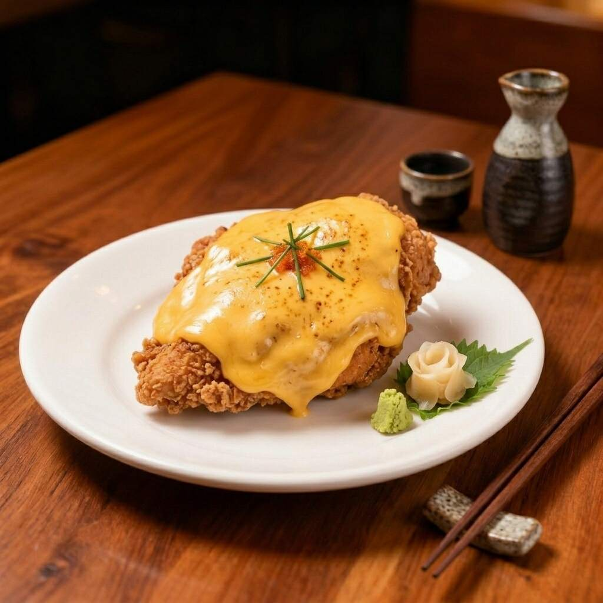
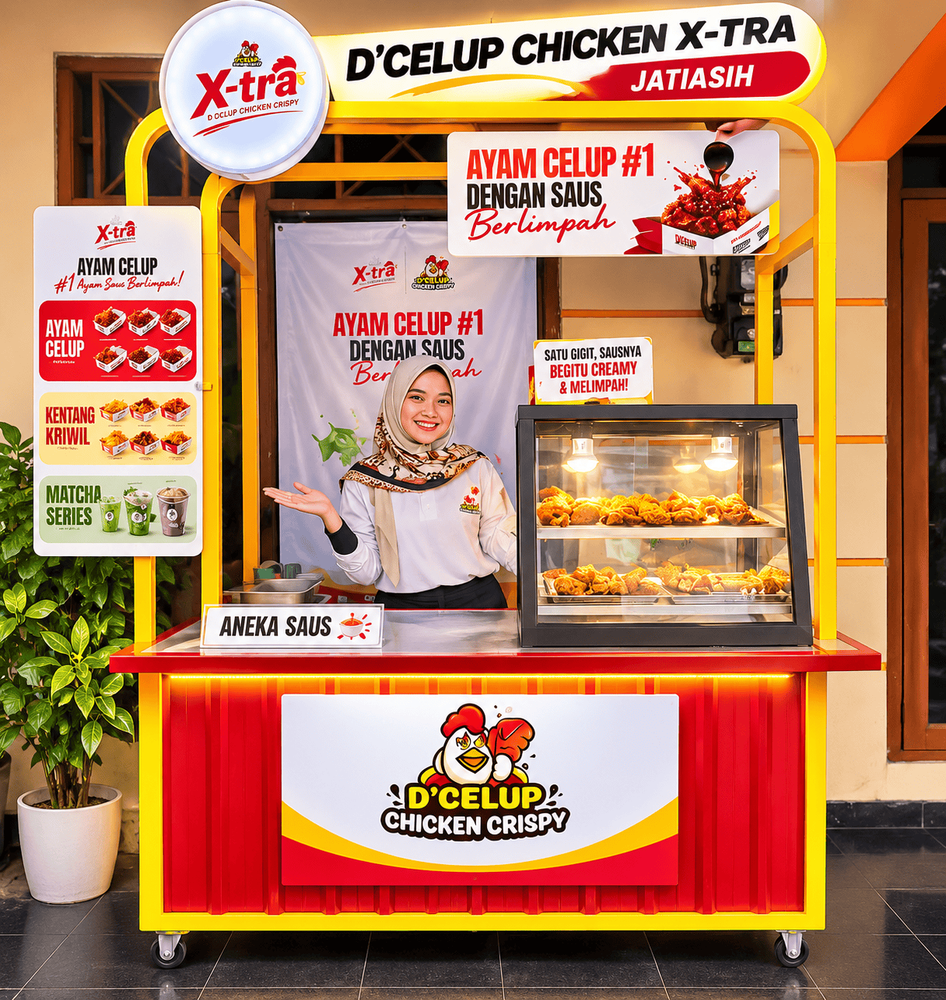
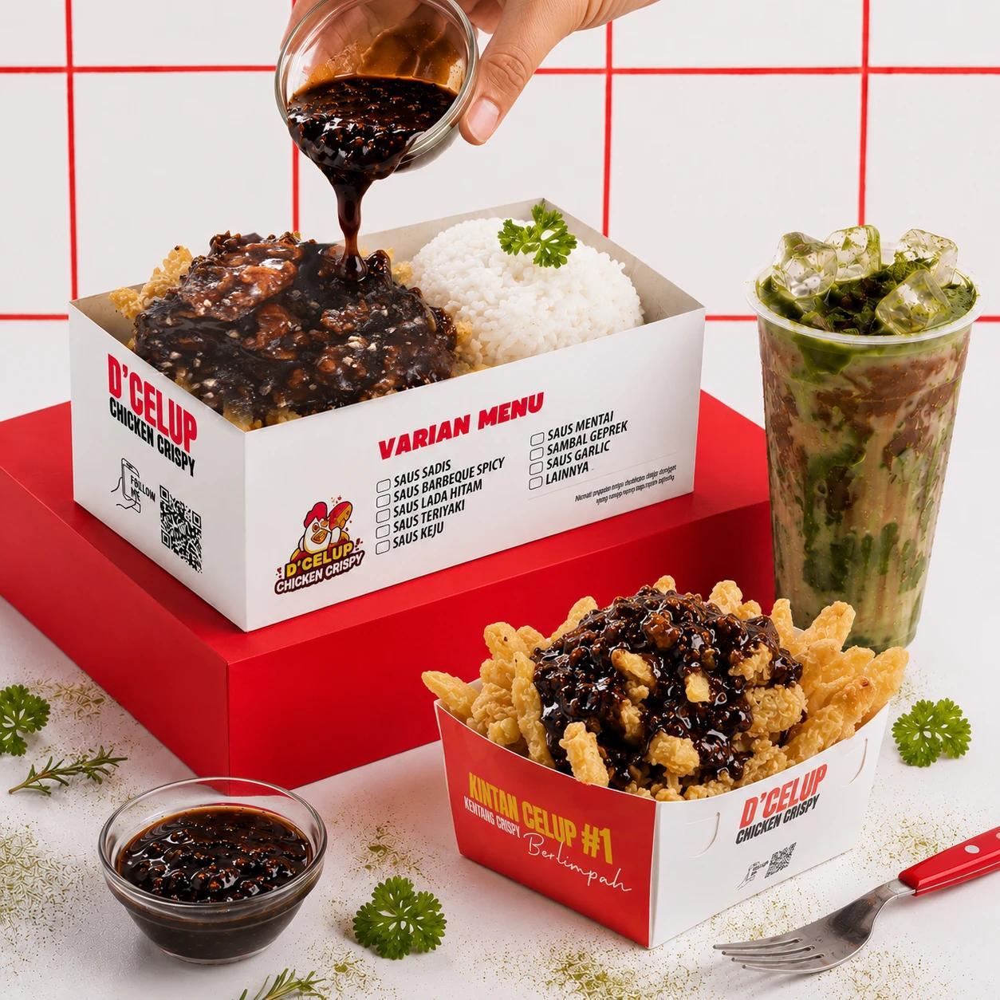

Saus Keju

Ayam goreng crispy renyah yang dibalut dengan lelehan saus keju creamy nan gurih, menghadirkan perpaduan rasa keju yang nikmat di setiap gigitan.
Nikmati ayam crispy D’Celup Chicken X-tra – Jatiasih dengan pilihan saus yang bikin penasaran. Mau rasa gurih, manis, atau pedas? Temukan pilihan favoritmu dan nikmati momen makan yang makin seru!

Ayam crispy dengan sensasi saus celup yang khas. Setiap pilihan saus menghadirkan pengalaman rasa yang membuat momen makan semakin seru.
Ayam dicelupkan ke dalam saus sehingga lapisan saus menyelimuti ayam dengan sempurna.
Bagian luar renyah dengan bagian dalam daging ayam yang tetap lembut dan juicy.
Mulai dari rasa gurih-creamy hingga sensasi pedas yang menggugah selera.
Cocok menemani waktu makan bersama keluarga maupun teman dalam berbagai suasana.
Dapat dinikmati di rumah atau dipesan melalui layanan pesan antar favoritmu.
Nikmati ayam crispy dengan saus celup pilihan, Kentang Kriwil, dan minuman Matcha dengan harga ramah di kantong. Pilihan menu yang memberikan pengalaman rasa istimewa ala restoran dan fast food modern.
D’Celup Chicken X-tra – Jatiasih merupakan outlet mitra D’Celup yang menghadirkan tiga pilihan produk, yaitu ayam crispy dengan aneka saus celup, Kentang Kriwil, serta minuman Matcha dengan beberapa varian rasa.
Nikmati pilihan menu yang lebih lengkap untuk menemani waktu makan bersama keluarga dan teman.

Sudah menentukan pilihan rasa favoritmu? Nikmati ayam crispy D’Celup Chicken X-tra – Jatiasih dengan saus celup pilihan yang menggugah selera. Untuk pesanan sehari-hari, kamu bisa langsung memesan melalui GoFood atau GrabFood. Sementara untuk pesanan acara dan jumlah besar, hubungi admin kami melalui WhatsApp.
Pesan praktis langsung sampai di depan pintu melalui aplikasi:
Konsultasikan kebutuhan nasi box & konsumsi acaramu ke admin WhatsApp:

Punya acara keluarga, arisan, ulang tahun, kegiatan kantor, gathering, atau Jumat Berkah? D’Celup Chicken X-tra – Jatiasih siap menjadi pilihan untuk melengkapi momen kebersamaanmu. Untuk pesanan acara dan jumlah besar, silakan hubungi admin kami melalui WhatsApp untuk mendapatkan informasi lebih lanjut.
Temukan jawaban seputar menu, pilihan saus, cara pemesanan, dan lokasi D’Celup Chicken X-tra – Jatiasih.
Dapatkan wawasan seputar sensasi saus celup, tips kuliner ayam crispy, dan informasi terbaru dari D’Celup Chicken X-tra – Jatiasih.
Konten artikel, tips kuliner, dan ulasan seputar sajian ayam crispy saus celup D’Celup Chicken X-tra – Jatiasih sedang disiapkan dan akan segera hadir di bagian ini.